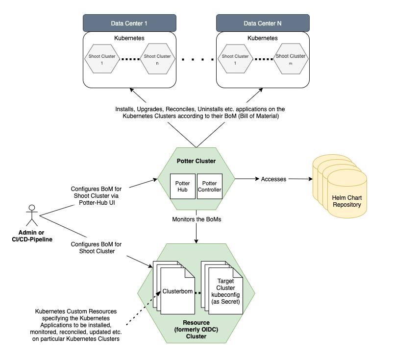

Docs
Welcome to the Potter Hub! Here, you can find everything you always wanted to know about the Potter Hub. As a first time visitor, you might want to first go through this document to get an overview over the Potter Hub. If you are looking for something specific, please see the navigation on the left hand.
For information about Cluster-BoMs, visit the Controller Docs.
What Is the Potter Hub?
The Potter Hub is a Kubernetes extension to deploy and manage deployments in Kubernetes clusters. It’s a central component in a Kubernetes landscape and doesn’t require any additional components running in the target shoot cluster. Target groups are primarily teams who want to deploy Kubernetes workload in a Gardener-managed cluster.
Benefits of using the Potter Hub
- Possibility to have one single YAML file describing the full set of K8s Deployments for a cluster instead of using individual Command Scripts for each K8s Deployment and also managing those deployments individually. Simply create a “Bill-of-Material” containing multiple k8s deployments using different deployment technologies like Helm, kapp or plain yaml (planned)
- Establish a declarative approach for K8s deployments (using Cluster-BoMs) as the standard for K8s Workloads to eliminate the need of creating specific deployment scripts to deploy K8s workload to Clusters, which quickly becomes unmanageable, especially in private cloud scenarios
- No need to deal with Helm or kapp (as well as other k8s deployment technologies) in detail. Instead, let the Potter Hub be responsible for handling these deployment technology details
- Possibility to retrieve and use one single status (the Cluster-BoM Status), representing the overall state of all deployments in a cluster, instead of trying to compute the overall cluster deployment state on your own
- Dependency-Management between Cluster Deployments (planned), where for example the sequence of K8s deployments can be specified, even between different K8s deployment technologies like Helm, kapp or plain YAML files
- Import/Export Management between deployments (planned), where specific data created during deployment of component A is needed during deployment of Component B
- Cluster-BoMs represent the single source of truth of what is actually running on a specific cluster, making it possible to provide deployment statistics across Gardener Projects (“What exactly runs on managed Clusters ?")
Architecture Overview

What can be deployed?
Supported Kubernetes deployments are currently based on Helm charts and kapp applications, but other types will be supported in the future.
To trigger deployments, two approaches are available:
- Manual deployments using the UI
- Automated deployments using Cluster-BoMs (see the Controller Docs).
The Helm charts are located in dedicated Helm chart repositories. These repos must be connected to a Potter Hub installation according to the installation guide.
Github Repository
The github repository of the Potter Hub could be found here